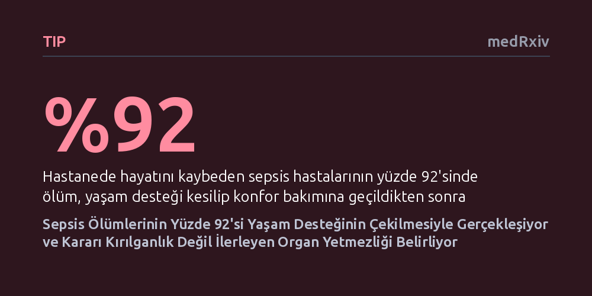

TIP · medRxiv · 2026-10-11
Araştırmacılar, sepsis hastalarında yaşam desteğinin sonlandırılması kararlarını ve bu kararların ölüm oranlarındaki rolünü inceledi. Hastanedeki sepsis ölümlerinin yüzde 92'sinin yaşam desteğinin çekilmesinin ardından yaşandığı ve bu kararın önceden var olan kırılganlıktan ziyade sonradan ilerleyen organ yetmezliğinden kaynaklandığı saptandı.
Sepsis ölümlerinin anlık enfeksiyon şokundan ziyade, haftalar süren tedaviye rağmen organların toparlanamaması sonucu alınan yaşam desteğini kesme kararlarıyla gerçekleştiğini göstererek ölüm oranlarının nasıl yorumlanması gerektiğini değiştiriyor.

Sepsis, vücudun bir enfeksiyona karşı verdiği kontrolsüz ve aşırı bağışıklık tepkisinin organlara zarar vermesiyle ortaya çıkan, yoğun bakımlarda sıkça karşılaşılan ölümcül bir tablodur. Tıp dünyasında sepsis kaynaklı ölümler genellikle enfeksiyonun ve organ yetmezliğinin doğrudan, ani bir sonucu olarak değerlendirilir. Ancak klinik pratikte birçok hasta, yaşamı sürdüren yapay solunum veya diyaliz gibi agresif müdahalelerin durdurulması ve hastanın acı çekmesini önlemeyi amaçlayan konfor bakımına geçilmesi sürecinde hayatını kaybeder.
Bu kararların hangi klinik aşamalarda ve hangi gerekçelerle alındığı bugüne kadar yeterince net aydınlatılamamıştı. Tedaviyi sınırlandırma kararlarının dinamiklerini anlamak, sepsiste ölüm oranlarını doğru yorumlamak ve yoğun bakım süreçlerini daha insani ve gerçekçi yönetebilmek açısından büyük önem taşımaktadır.
Araştırmacılar, üçüncü basamak bir akademik tıp merkezinde uzman hekimler tarafından sepsis tanısı kesinleştirilmiş 239 yetişkin hastayı içeren ileriye dönük (prospektif) bir gözlem grubunun verilerini ikincil bir analizle ele aldı. Çalışma kapsamında, hastanede yatış süresince yaşam destek tedavileri kesilerek yalnızca konfor odaklı bakıma (CMO) geçirilen hastalar belirlendi.
Bu gruptaki hastaların hastaneye yatmadan önceki genel sağlık ve fonksiyonel durumları, hastalıklarının ciddiyeti, hayatta kalmaları halinde beklenen yaşam kaliteleri ve tedaviyi sonlandırma kararına yol açan temel klinik nedenler yapılandırılmış hasta dosyası incelemeleriyle ayrıntılı biçimde kaydedildi. Böylece sürecin hekim ve aile görüşmelerine yansıyan klinik temelleri belgelendi.
İncelenen 239 sepsis hastasından 42'sinde (%17,6) yatış sürecinde yaşam desteği kesilerek sadece konfor bakımına geçildi. Bu hastaların önemli bir bölümünde kanser (%76) ve bağışıklık yetmezliği (%62) gibi ağır kronik hastalıklar bulunuyordu. Buna karşılık, hastaların %88'i hastaneye yatmadan önce kendi evinde yaşıyordu; yarısından fazlası (%52) günlük yaşam aktivitelerinde tamamen bağımsızdı ve %90'ı hastaneye yatarken tam canlandırma talebiyle kabul edilmişti.
Yaşam desteğini sonlandırma kararlarının yarısını (%50) ilerleyici çoklu organ yetmezliği (%19), tedaviye yanıt vermeyen septik şok (%19) ve geri döndürülemez solunum yetmezliği (%12) oluşturdu. Buna karşın, ileri derecede fiziksel düşkünlük (%5) veya yatış öncesi yetersiz fonksiyonel kapasite (%2) nadiren temel karar gerekçesi oldu. Hastanede gerçekleşen 38 ölümün 35'i (%92) konfor bakımına geçişin ardından yaşandı; yatıştan konfor bakımına geçişe kadar geçen medyan süre 16 gün, ölüme kadar geçen süre ise 18 gün olarak belirlendi. Ailelerle yapılan bakım hedefleri görüşmelerinde kalıcı solunum cihazı bağımlılığı (%62) ve diyaliz bağımlılığı (%36) beklentisi belirleyici rol oynadı.
Araştırma bulguları, sepsiste yaşam desteğinin çekilmesi kararının önceden zaten tükenmiş veya yatağa bağımlı hastalarda değil; hastaneye nispeten bağımsız gelen ancak haftalarca süren yoğun tedaviye rağmen organ hasarını geri çeviremeyen hastalarda alındığını göstermektedir. Bu durum, akut sepsis atağının ardından organların toparlanamaması tablosunu kritik bir klinik dönüm noktası olarak öne çıkarmaktadır.
Sepsis ölümlerini yalnızca anlık bir enfeksiyon yenilgisi olarak görmek yerine, tedaviyi sınırlandırma kararlarının ve kalıcı organ kaybının etkisini hesaba katmak gerekmektedir. Hangi hastaların organ yetmezliğinden başarıyla çıktığını, hangilerinin ise geri döndürülemez hasara sürüklendiğini anlamak, gelecekteki hedefli tedavi stratejilerinin doğru hastalara yönlendirilmesinde anahtar rol oynayacaktır.